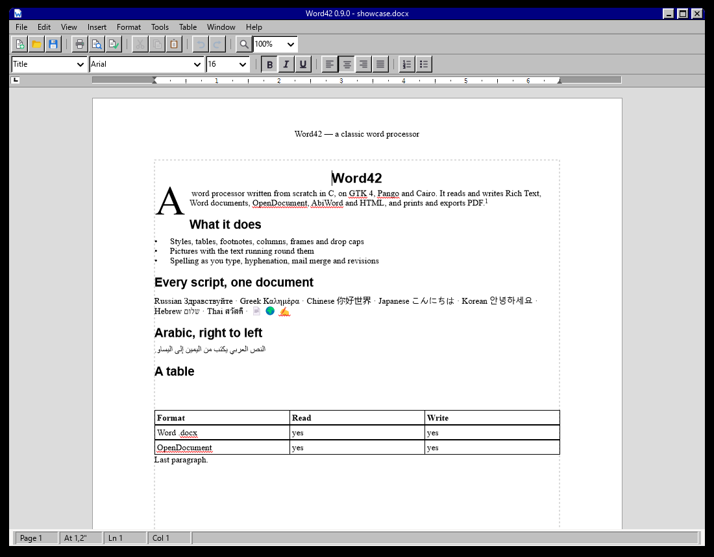
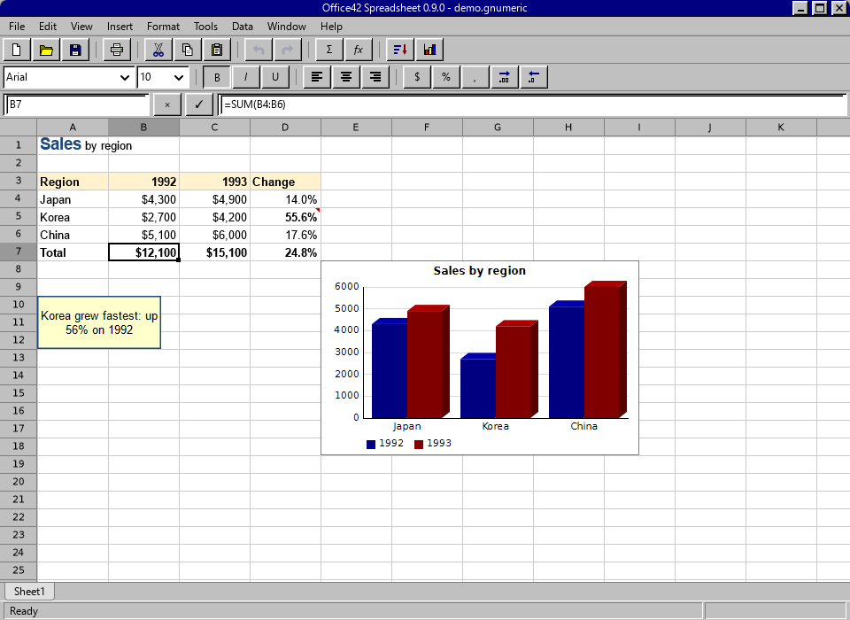
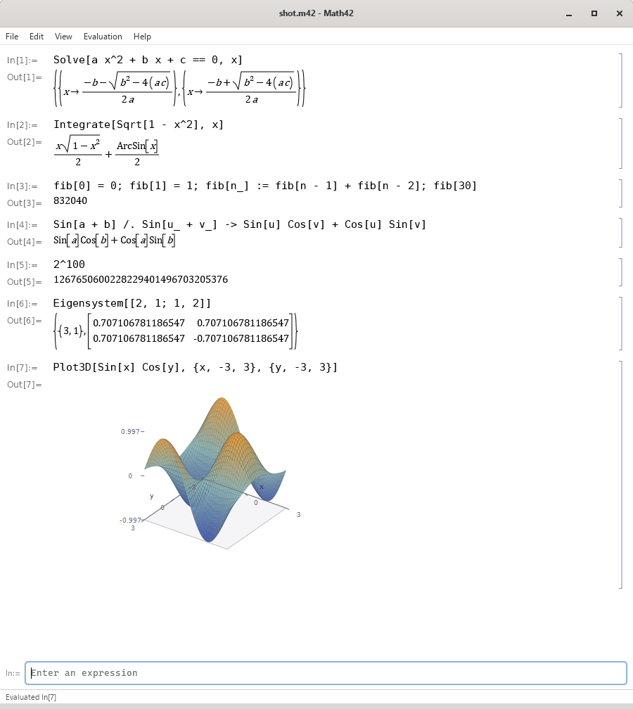

word42
A word processor.
A menu bar, two toolbars, a ruler, a status bar and a page. Styles, tables, footnotes, columns, headers and footers, mail merge, spelling, an outline view and a page-layout view that shows the paper it will be printed on.

- Reads and writes
.docx,.doc,.odt,.rtf, HTML, Markdown and plain text. - Prints, and exports PDF with real text in it rather than a picture.
- Undo for everything, and a document model that keeps what it was told.
office42
A spreadsheet.
A grid, a formula bar, a name box, two toolbars and sheet tabs. Five hundred and sixty-one functions, thirteen kinds of chart, pivot tables, the analysis tools, conditional formatting, form controls, and a recalculation that knows what depends on what.

- Reads and writes
.gnumeric,.xlsx,.xls,.ods, CSV and HTML; prints and exports PDF, and reads one back. - Python is the macro language — in a console, in
=PY(), in functions of your own, and recorded from what you do. - A book can carry a whole SQLite database inside it,
and
=SQLVALUE()asks it from a cell. office42-calcdrives the same engine from a terminal.
Source on GitHub User guide How far it is from Excel Python The database
math42
A mathematics notebook.
Type an expression, press Enter, and the answer is set as mathematics:
fractions stacked, powers raised, roots under a radical, matrices in
brackets, graphs drawn. It speaks two languages — Sin[Pi/2]
and sin(pi/2) both work.

- Exact whole numbers and fractions, and whole numbers with no ceiling.
- Calculus, linear algebra, statistics, differential equations and transforms — the mathematics an engineering degree teaches.
- Notebooks are plain text, played back from the top, so a page is reproducible by construction.